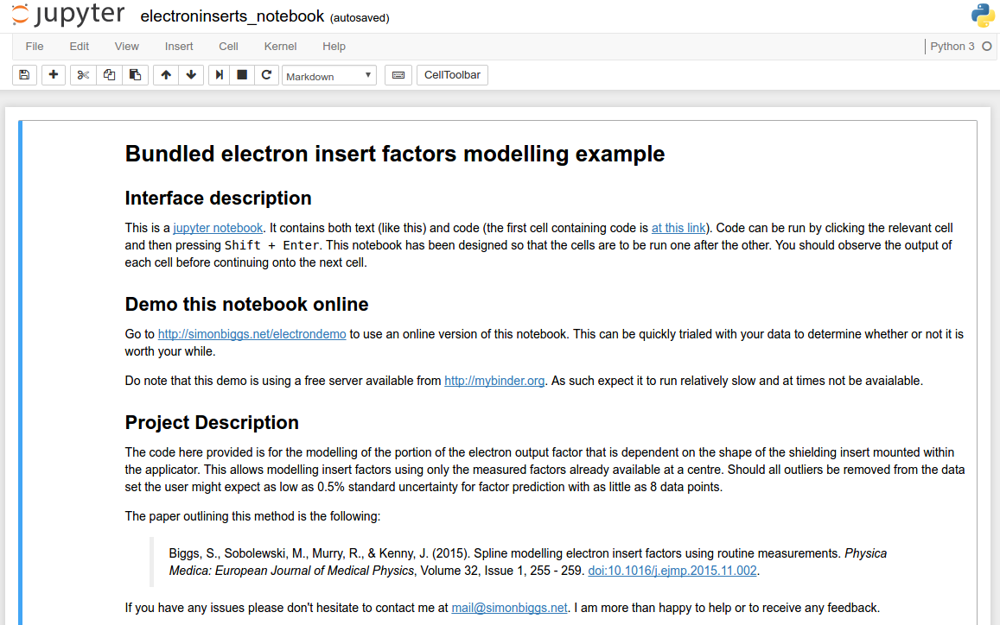

Redirecting you to http://mybinder.org/repo/Simonbiggs/electroninserts_bundle/electroninserts_notebook.ipynb. Feel free to directly click this link if the redirect fails. This should take you to a jupyter notebook that looks like the following screenshot:
If you see anything else after the redirect (such as an error message) it may be worth trying again in 30 minutes. If it continues to fail please contact me at mail@simonbiggs.net. Please note http://mybinder.org is a free server it sometimes goes offline.
If you wish to install the bundle on your local machine head over to https://github.com/SimonBiggs/electroninserts_bundle/blob/master/README.md